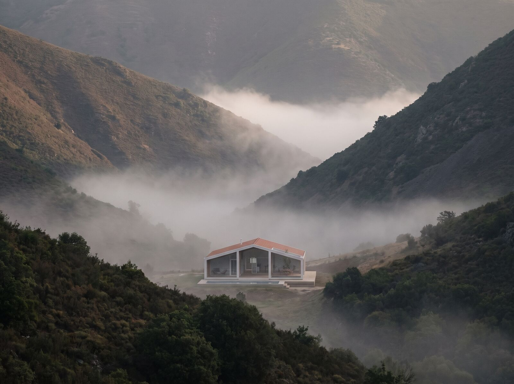
Model 01
Vale
The valley house
Built low. Built long. For sites with depth — the house stretches, the view does the work.
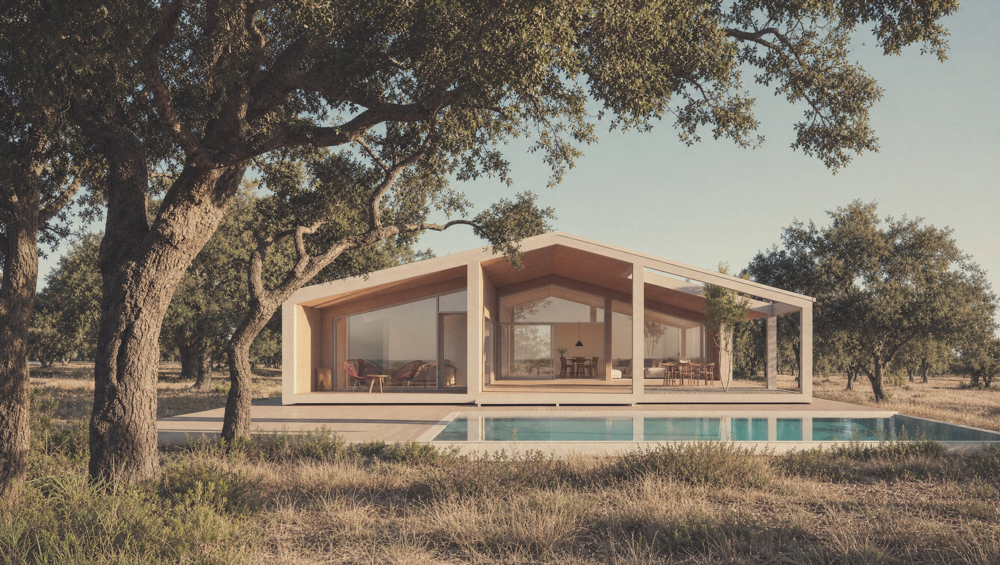
Scapeland · Est. Outside
Serious houses, far from the city — built on a system the market said wasn't possible.
01 — The Argument
For decades, luxury was sold by the square metre of the city.
Expensive marble. Views of other buildings. Scarcity, manufactured.
Scapeland starts somewhere else.
We believe real luxury is simple, and almost always outside — space, light, silence, horizon. The things cities stopped offering and started charging extra for. Scapeland brings them back to the centre of the offer. Not as amenities. As the product itself.
The setting
We choose the land before we draw the house — birch forest, open valley, the edge of the water. Space, light, silence, horizon. The view was here long before the walls.
The making
A mass-timber Core and a passive-house Skin — warm, quiet, low-carbon. Engineered to a standard the market kept for far more; the craft is in everything you never have to think about.
02 — The System
Five years of refinement. One purpose.
To deliver premium architecture at a price the market said wasn't possible.
Solid is built on five technologies. Each one named, each one proprietary. Together, they make a house that goes up in weeks, lasts for decades, and costs what it should — not what the market got used to charging.
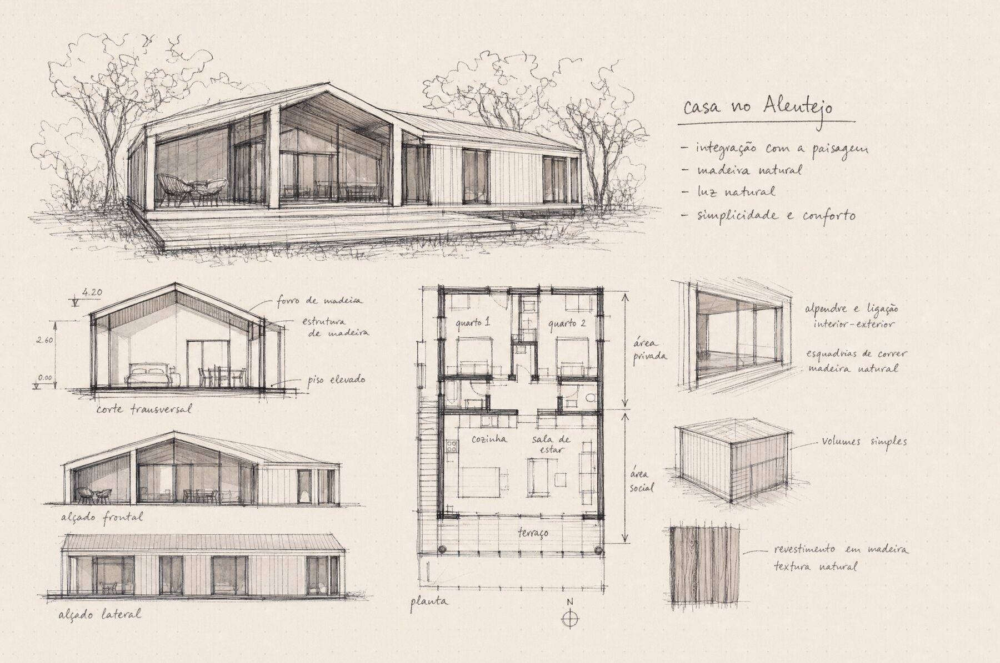
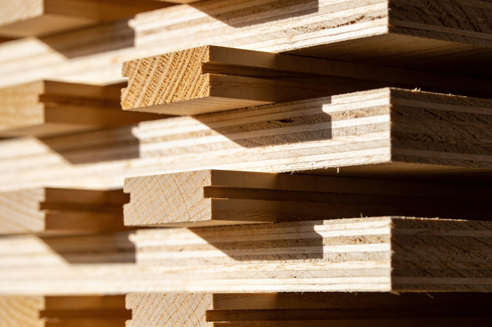
Each house is Solid, configured to its land. Not sizes — gestures. Vale stretches. Serra climbs. Costa opens. Campo holds. Same system. Four answers.

Model 01
The valley house
Built low. Built long. For sites with depth — the house stretches, the view does the work.
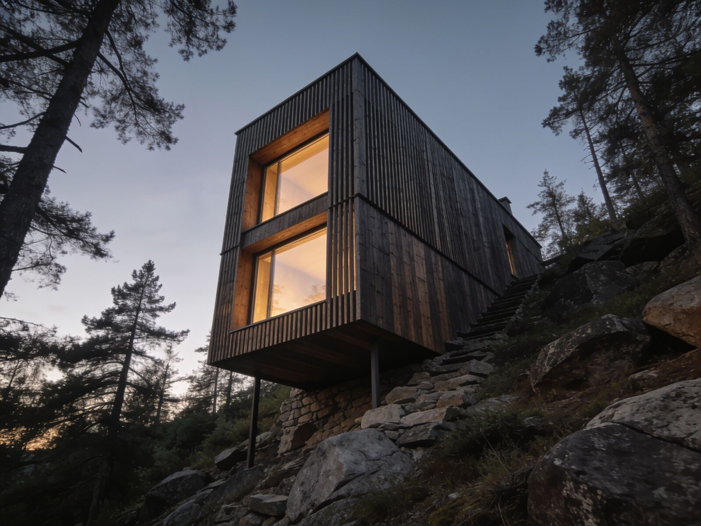
Model 02
The hillside house
Built up. Higher ceilings, double-height living. The house earns its view by climbing.
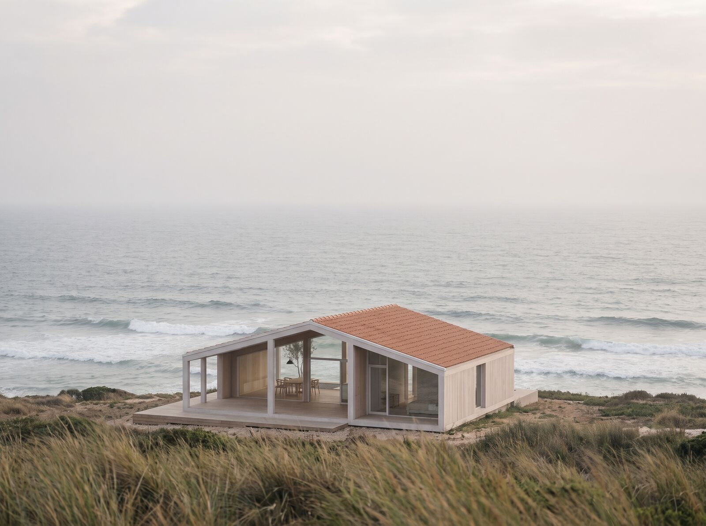
Model 03
The coastal house
Built for light and salt. More glass, longer overhangs, a Skin specified for the sea.

Model 04
The open-land house
Built for flexibility. The most modular. The entry point — where most Scapeland stories begin.
Built, not promised
The first Scapeland house stands in the Alentejo, between holm oaks and dry grass. Everything on this page is already true of it.
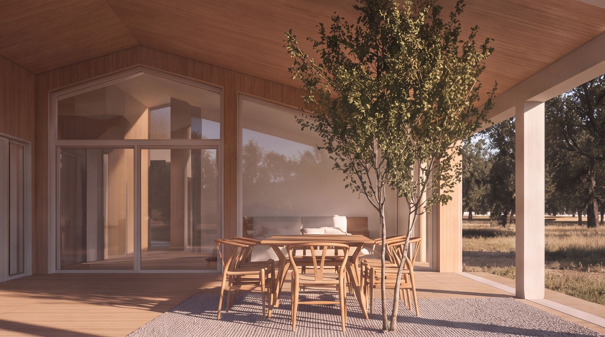
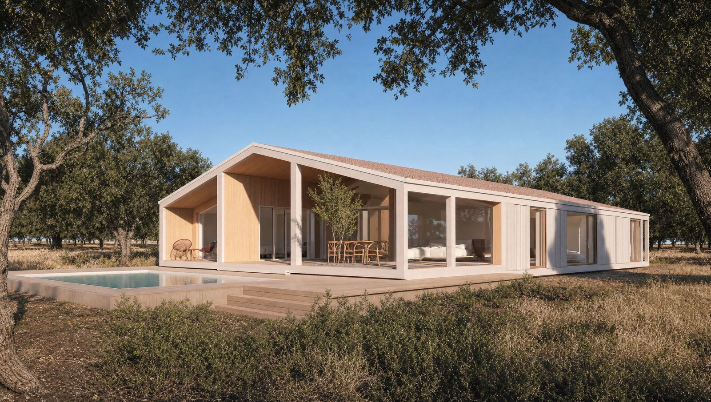
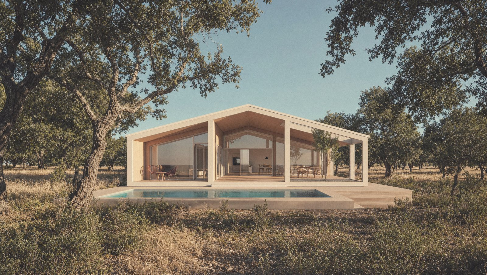
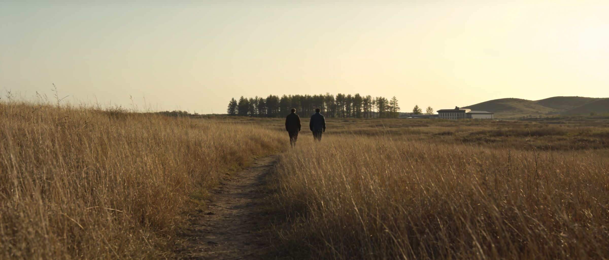
A decision, not an escape
The city was a habit.
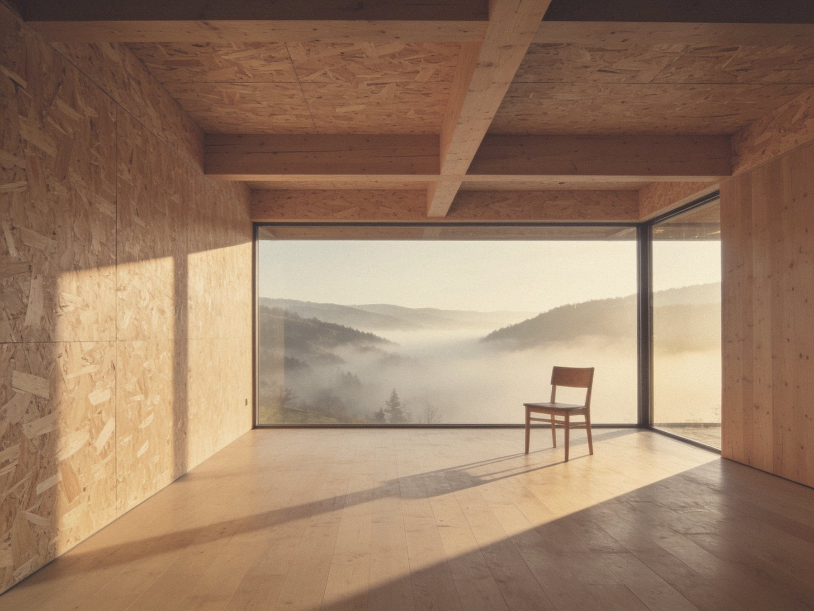
03 — To Inhabit
We're not selling weekend escapes. We're selling the decision to live better, further out, with more time.
You wake up to fog over the valley. Your view isn't someone else's wall. The best square metre is the one we didn't build.
This is what Scapeland is for.
It always was. Reservations open for the first twelve houses.
Reserve early access